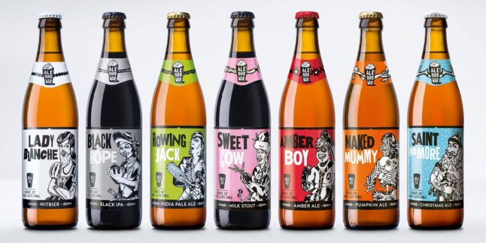

Jest nas trzech i kochamy piwo. Może to i banał ale równocześnie prawda. Gdy nadarzyła się okazja do przeniesienia naszej piwnej pasji na wyższy poziom, nie wahaliśmy się ani chwili.
Tak na początku 2012 roku powstał AleBrowar, nowa inicjatywa kontraktowana polskim rynku. Na razie nie mamy kadzi, fermentatorów czy linii rozlewu – mamy za to chęci i umiejętności, które pozwoliły stworzyć niepowtarzalne piwa. Może zabrzmi to trochę górnolotnie ale w tym przedsięwzięciu nie brakuje także misji. AleBrowar ma być częścią rewolucji, która zmieni oblicze piwnej sceny w naszym kraju.
Żyjemy w ciekawych czasach, czas na ciekawe piwa.